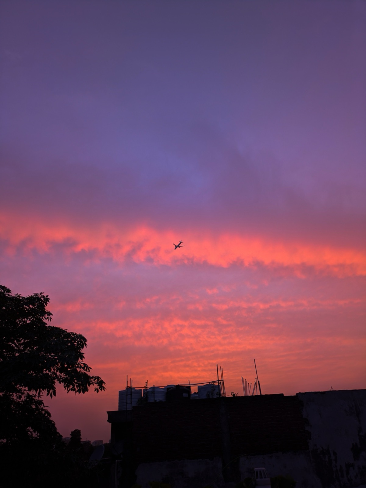
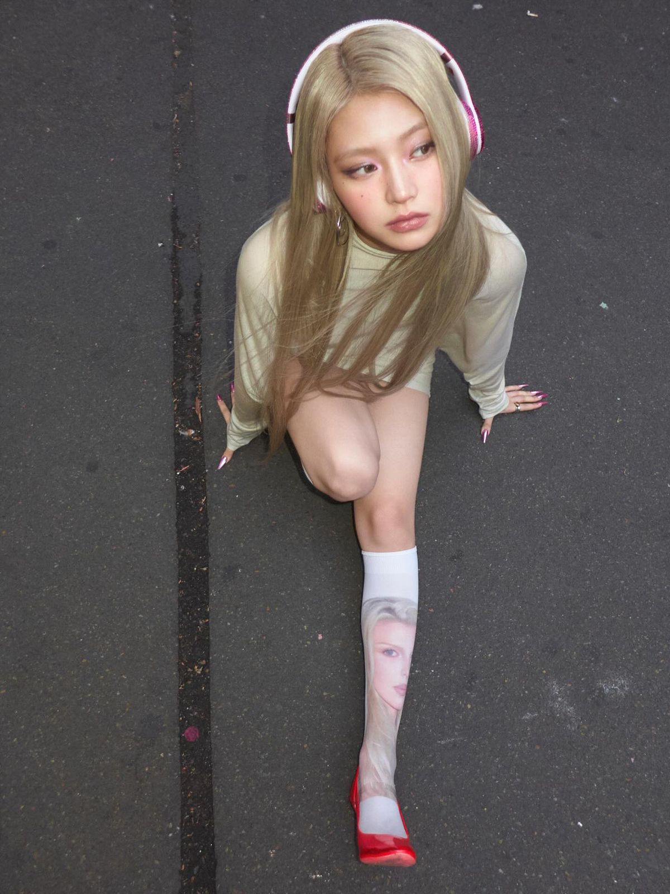
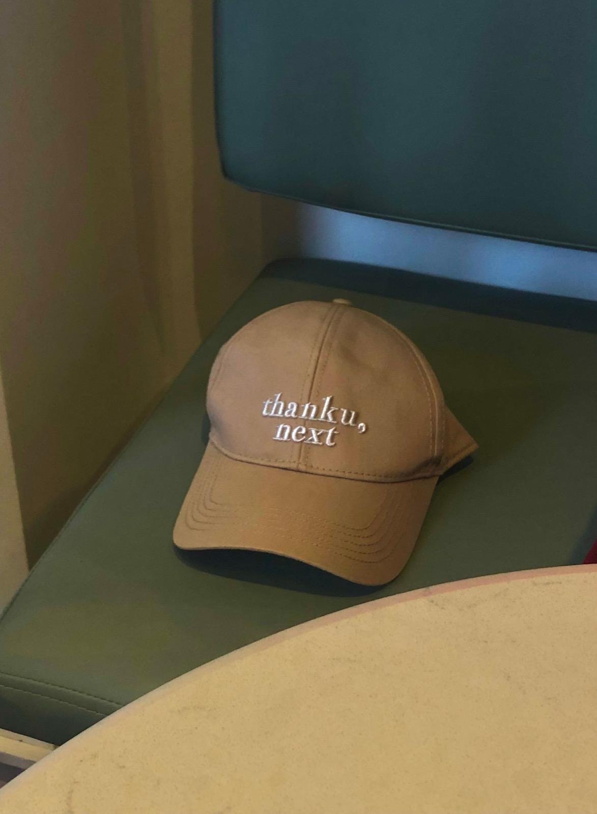
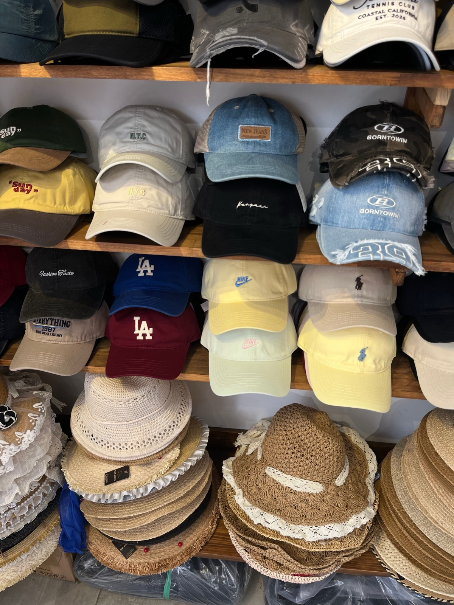
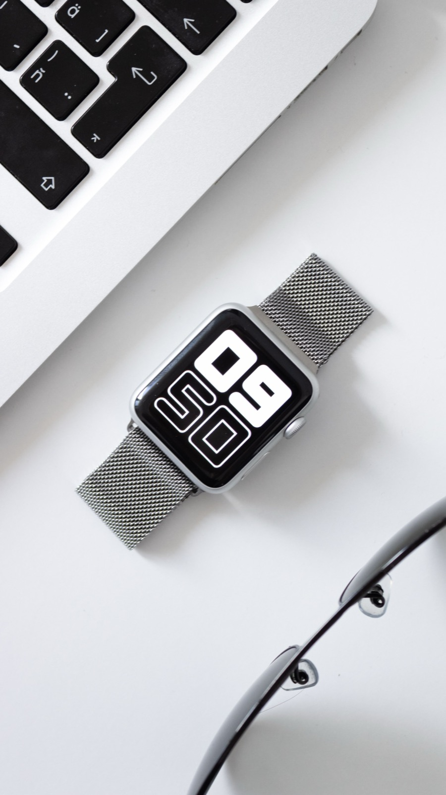
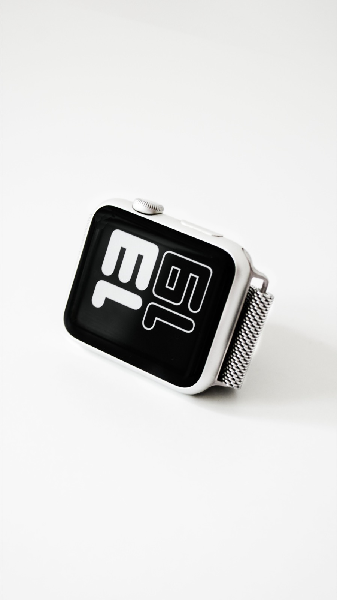
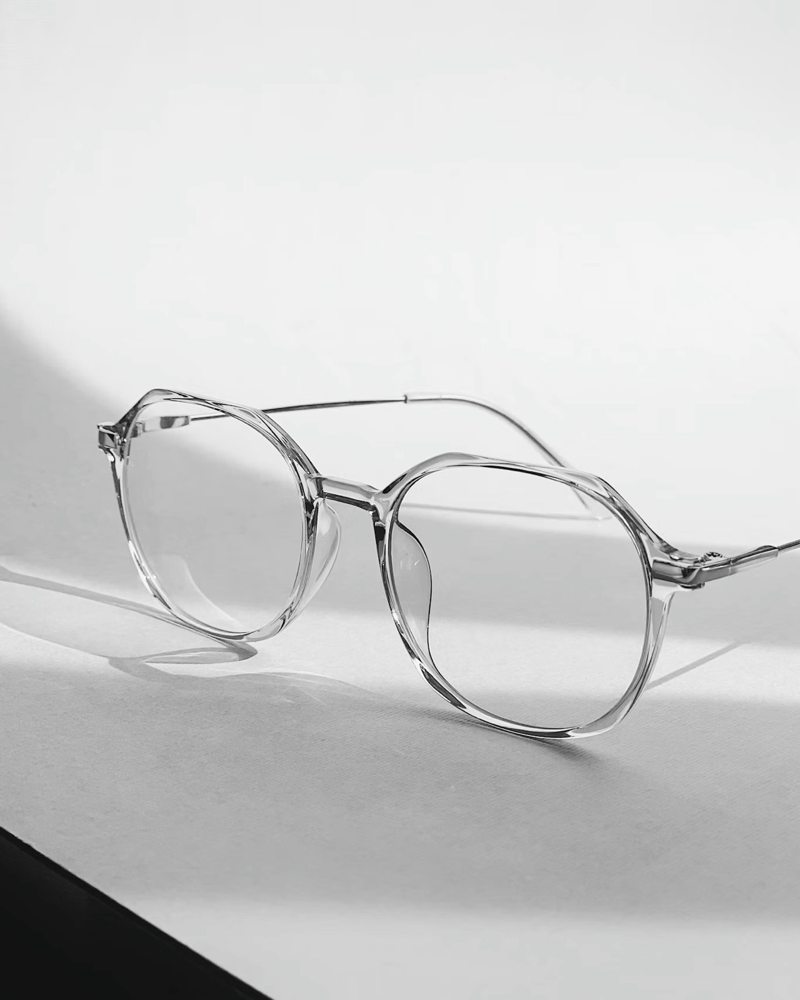
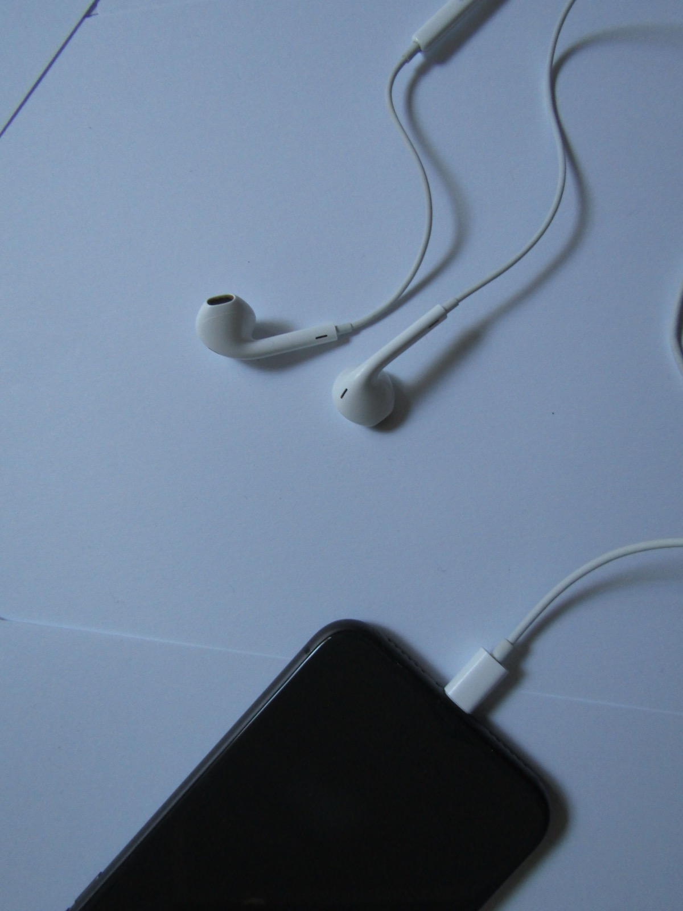
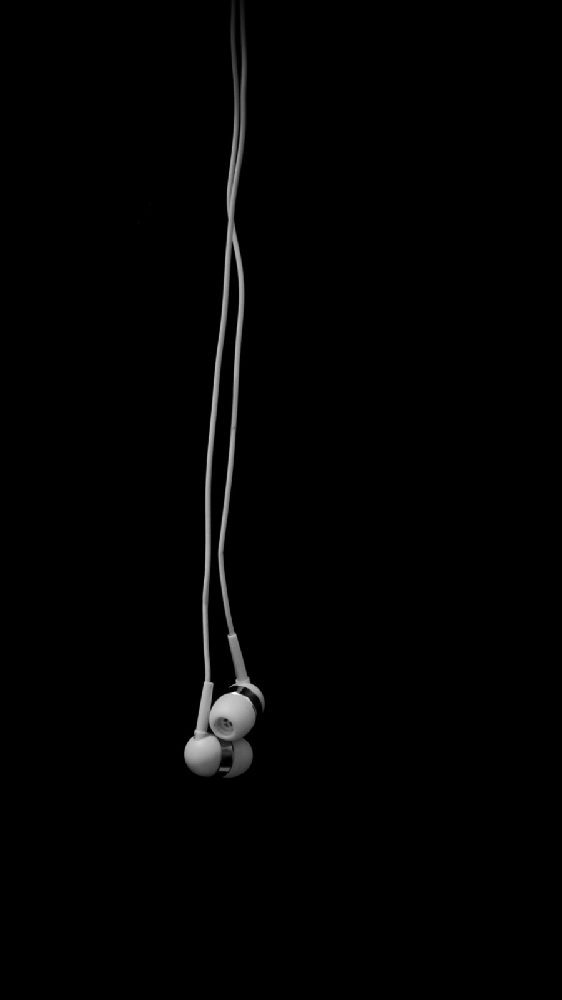
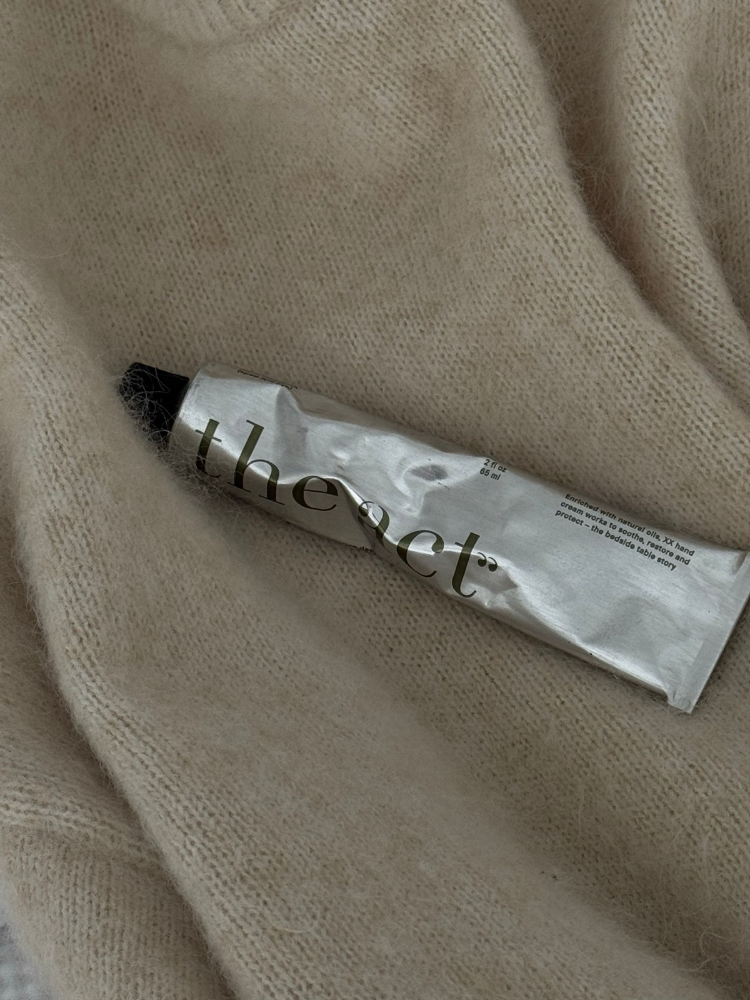

매번 달라지는 하늘의 색과 구름의 결

늘 보던 것이 달라 보이는 순간

매번 달라지는 하늘의 색과 구름의 결


때로는 말보다 더 많은 것을 보여주는

어디론가 이어지는 길의 방향
유니크한 비주얼과 강렬한 퍼포먼스가 돋보이는 멤버
위로 올라간 눈매, 얼굴상
고양이를 떠올리게 해서 / 유니크하고 예뻐서
어느 컨셉이든 자기 것으로 만드는

다양한 컨셉을 잘 소화해서
무대 위에서의 다양한 표정연기
시원시원한 춤선이 돋보여서
산책


생각이 많아질 때 고요하고 편안해서
독서


집중하고 싶을 때 조용하고 집중이 잘 돼서
이동


노래 들으면서 이동할 때 이동하기 편리해서
햇빛이 강할 때


챙이 얼굴을 딱 가려 줘서
시간을 보거나 연락을 간단히 확인할 때


휴대폰이랑 연동이 가능해 편리해서
시력이 나빠 앞이 잘 보이지 않을 때

가벼워서 오래 써도 편해서
밖에서 노래를 듣고 싶을 때


줄이 있어 잃어버릴 걱정이 없어서
손이 건조할 때

향이 좋고 끈적거리지 않아서